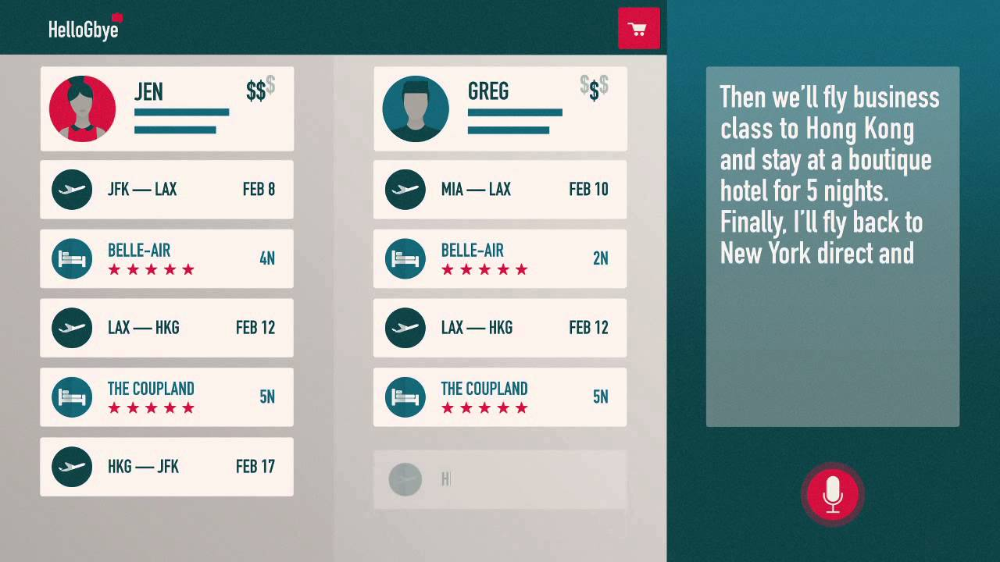

Role: Junior Developer Intern
Evaluation: Outstanding (Letter of Reference available)
Technology: JavaScript (Node.js, Angular 2+, d3.js), MongoDB, TypeScript,
Git, HTML/CSS, Postman
My Tasks:
Developed a logging and querying client using MongoDB and Node.js(TypeScript) to store and query data,
allowing for a 50% more efficient
reviewing process.
Used d3.js algorithms to parse through over 1000 lines of JSON code and produce a data visualizer to view each
object as a tree network.
Participated in Sprint meetings and weekly meetings with seniors software developers to ensure on-time
delivery of software.
Revised and upgraded 2000+ lines of TypeScript from Ionic 2 to Ionic 4 to be used in a new consumer-based application.
Wrote Angular directives and components using best practices to be used in the company's client-side applications.